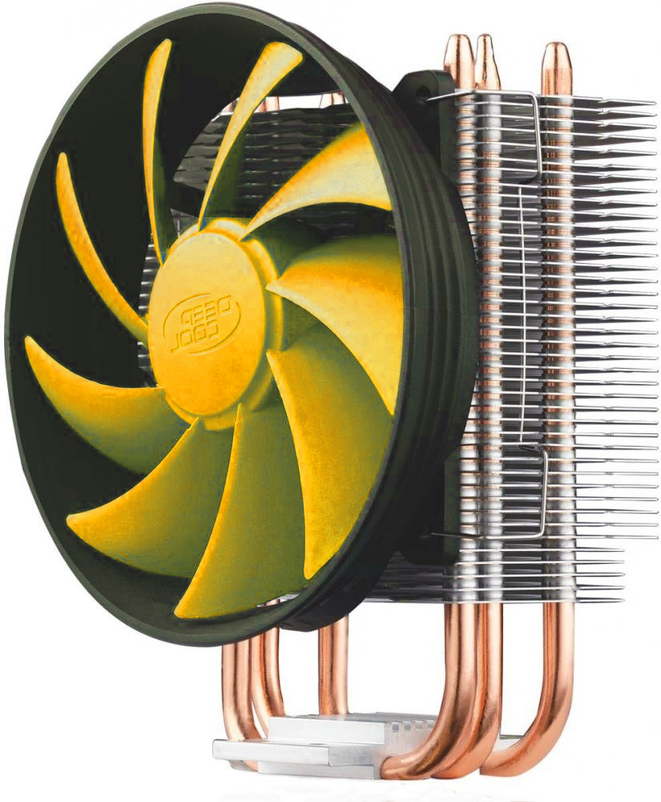

И так, взвесив все за и против, вы всё же приняли решение собирать ПК самостоятельно. И первое что необходимо сделать - это подобрать железо. Для этого заходим на сайт любого интернет магазина и заходим в раздел комплектующих для ПК. И так уж у нас повелось, что за железом обычно идут в DNS (не реклама) связано это с обширным выбором железа и доступностью оффлайн магазинов в регионах, что избавляет вас от нобходимости ждать доставку по 2-3 недели.
Перед тем как выбирать комплектующие для вашего будущего ПК, напоминаю, что основными компонентами компьютера являются: процессор и его кулер, материнская плата, оперативная память, накопители, видеокарта и корпус.
Процессор
Заходим в раздел с процессорами и первым делом в фильтрах выбираем колличество ядер. Их минимальное число для домашнего компьютера - 4, а лучше 6. Этого вам хватит дял игр, офисных задач, монтажа и тому подобного. Выбирайте 8 ядер и выше если требуется выполнять тяжёлые задачи по типу работы с 3D графикой. Не стоит забывать про многопоточность - она должна присутствовать. Немало важный аспект выбора процессора - встроенное графическое ядро. Если ваш бюджет сильно ограничен, то на первое время можно собрать системник на процессоре со встройкой, а в будущем докупить видеокарту. Если же вы готовы потратиться на видеокарту то можно выбирать процессор без видеоядра, что экономит от 500 а иногда и до 5000 рублей.
Выставив все вышеперечисленные фильтры и начав выбирать процессор вы можете увидеть на первый взгляд одинаковые "камни" с разными ценниками и препиской в конце названия - BOX и OEM. По характеристикам и производительности абсолютно никаких отличий между ними нет, разница лишь в комплекте поставки.
В боксовой версии процессор поставляется в коробке, в комплекте идёт документация и кулер с нанесённой на его пятку термопастой (иногда в боксовой комплектации кулера нет, проверяйте перед покупкой) В версии OEM в комплект входит только сам процессор, упакованный в пластиковую подложку и замотанный в пупырчатую плёнку.

Так какую же комплектацию выбрать? Для офисной сборки вполне достаточно боксового кулера, но из за небольшого диаметра лопостей такому кулеру нужно больше оборотов для охлаждения процессора, следовательно это не самое тихое решение, поэтому лучше выбрать OEM версию проца и отдельно купить даже самый незамысловатый башенный кулер, но о выборе охлаждения поговорим в следующем пункте.
Но вернёмся к выбору самого процессора. И здесь у вас всего один метод - это тесты, желательно посмотреть в нескоьких источниках. На ютубе вы можете найти множество тестов в играх, стресс тестах, бэнчмарках, а так же попарные сравнения различных процессоров. Конечно же не обойдётся без сравнения Intel и AMD, кто то вам скажет что AMD для работы, а Intel для игр, кто то скажет что наоборот, в общем, сколько людей столько и мнений. Берите то, что показывает себя производительнее в тех задачах, которые необходимы именно вам.
И последний пункт на который следует обратить внимание, в случае если вы выбрали Intel - это маркеровка процессора, т.е. буква в конце. Буква K в конце означает возможность разгона, ценник на такой CPU будет побольше, и материнская плата под него тоже будет подороже. Буква F означает что в процессоре отсутствует встроенное видеоядро. С AMD всё проще, они все поддерживают разгон. Буква G для процессоров AMD означает наличие видеоядра.
Охлаждение
 Если вы выбрали OEM версию процессора, то вам по-любому нужен кулер. Да, я считаю что нужен именно башенный кулер, а что же касается систем водяного охлаждения - они не нужны. Очень уж они ненадёжны, а во-вторых, башня как правило имеет один вентилятор, а водянка - 2 или 3, а ведь чем больше вентиляторов, тем больше шума. Хорошая башня вполне способна обеспечить такой же уровень охлаждения что и водяное, но в любом случае, выбор остаётся за вами. И так, заходим в раздел "Кулеры для процессора" и открываем фильтры. Во вкладке сокет нужно выбрать сокет, соответствующий выбранному вами процессору, а во вкладке рассеиваемая мощность выбираем тепловыделение процессора умноженное в полтора-два раза, по причине того, что характеристика "рассеиваемая можность" весьма субъективна, так что выбирая железо не забываем попутно смотреть отзывы. Кулер также должен поддерживать автоматическую регулеровку оборотов, что так же способствует снижению уровня шума. Ну а дальше чистая вкусовщина - выбирайте кулер который вам понравится внешне.
Материнская плата
Тут придерживаемся той же тактики - сокет вашего процессора и сокет материнской платы должны совпадать. Далее выбираем чипсет. Если вы взяли процессор Intel с просто буквой F в в конце, то необходимо выбрать H или B чипсет, если вы планируете разгонять процессор и выбрали Intel с буквой K или KF в конце то берите Z или H чипсет. В случае с AMD при желании разгонять проц выбирайте B либо X чипсет, A чипсет разгон не поддерживает. Следующим шагом заходим на официальный сайт производителя материнсокй платы и проверяем поддерживает ли выбранная плата ваш процессор, обычно указывают поколения поддерживаемых процессоров. Опять же, если планируется разгон, то следует выбирать материнку у которой будет побольше фаз питания процессора, над ними должен находиться радиатор. Если разгон не предвидится то будет достаточно 6 фаз, а вот радиатор не помешает, но если его не будет то это не особо критично. И снова, основываясь на отзывах и обзорах выбираем уже конкретную материнку. Идеальмой доски не существует, а вот стремящиеся к идеалу есть, при чём во всех ценовых категориях.
Оперативная память
Самое сложное уже позади, заходим в разжел оперативная память DIMM, тип памяти выбираем тот который поддерживает ваша материнка, сегодня это в основном DDR4 либо DDR5. Колличество модулей обязательно берём не менее двух, это позволит памяти рботать в двуканальном режиме, а вот одна планка памяти нет и вы существенно потеряете в производительности. (всё это не касается DDR5 памяти, её можно взять одним модулем) И не стоит убеждать себя что сейчас поставите одну планку, а потом со временем вторую. Не поставите, ведь нет ничего более постоянного чем что-то временное. Объём памяти в современном ПК должен составлять не менее 16 гигабайт, хотя для офиса пока вполне хватает и восьми. Тактовая частота чем больше тем лучше, однако смотрите на утверждённую на сайте производителя вашего процессора максимальную стабильную частоту. В случае с AMD Ryzen в двух словах скажу следующее - частота памяти должна быть не менее 3200мгц, "рязань" чувствительна к частоте оперативки.
Накопители
Обычно в качестве хранилища используется связка SSD под систему и пару программ и жесткий диск под файло-помойку. Начнём с выбора SSD. Он может быть формата 2.5 SATA а может быть M2. У M2 накопителей заявленные скорости чуть повыше чем у 2.5 SSD. А еслии же ваша материнка поддерживает NVMe накопители, то есть смысл задуматься о преобретении такого SSD диска с его космическими скоростями, которые могут составлять десятки гигабайт в секунду. Хотя лично мне сегодян хватает и скоростей обычного 2.5 SSD. Объём должен составлять 240-512 гигабайт. Типы памяти предпочтительны TLC, 3D nund, MLC, самое главное не QLC. Так же приличный SSD должен иметь буфер DRAM. К сожалению ни в одном магазине нет такого фильтра, но в этой таблице вы можете ознакомиться с подробными характеристиками более менее известных SSD накопителей. А вообще даже бюджетный SSD может прослужить вам много лет, опять же, смотрите отзывы.
Жесткий диск берите на терабайт и выше. Самое главное - скорость вращения только 7200 оборотов в минуту, не меньше. Конечно лучше выбрать известного производителя, например Western Digital, Seagate или Toshiba.
Видеокарта
Как правило на видеокарту выделяется большая часть бюджета всей сборки. Выбирать тут так же следует исключительно по тестам, коих в ютубе чуть больше чем много, также обязательно посмотрите тесты видеокарты в паре с вашим процессором. Обычно говорят, что потенциал видеокарты считается раскрытым процессором, когда в игровых тестах ЦПУ загружен на 60%, а видеокарта на 95-100%.

Конструктивно чем больше у видеокарты вентиляторов и чем массивнее радиатор - тем лучше и тише, хотя если ТДП видеокарты небольшое то хватит и одного вентилятора. От какого вендера выбрать видеокарту? Сказать трудно. У одного и того же произволдителя могут быть как неплохие варианты так и не очень себя зарекомендовавшие, так что снова опираемся на отзывы и обзоры при выборе, по другому никак.
Блок питания
Блок питания является одним из самых важных компонентов ПК и экономить на нём не стоит, так как он
защищает от различных перепадов в сети всю вашу систему. Чтобы рассчитать потребление вашей будущей
системы необходимо воспользоваться калькулятором мощности, например вот этим,
в нём выбираете ваше железо, в пункте "количество вентиляторов" установаите заначение 4. К выведенному калькулятором значению
прибавляем 150, а лучше 200 Ватт под всякие там подсветки, разгоны, апгрейды и таму подобное.
Обязательные условия:
- У блока питания должен быть активный PFC, входной фильтр напряжения да и в целом достойная элементная база. И снова к нам на помощь приходят обзоры и отзывы. Гланое, никогда не берите БП Aerocool VX и KSAS - они опасны для вас, ваших близких и вашего ПК.
- У блока питания должен быть разъём для полного питания ваший видеокарты, обычно это 8pin, смотрите в характеристиках.
- У блока питания должен быть разъём для питания вашего процессора, обычно это 4 + 4pin
- У блока питания должно быть достаточно разъёмов питания SATA для питания ваших накопителей
Корпус
Выбирая корпус, помимо внешнего вида необходимо учитывать множество параметров, так что открываем характеристики приглянувшегося корпуса и смотрим. Во-первых корпус должен быть совместим с форм-фактором вашей материнской платы и блока питания. Во-вторых, высота вашего кулера должна быть вмещаема в корпус. Третье - длина видеокарты должна быть вмещаема в корпус. Если корпус очень понравился, то можно заменить не подходящее комплектующее на аналогичное подходящее по размеру.
Продуваемость. Этот параметр влияет на температуру всего железа в корпусе а также на его запыляемость. Чем лучше продуваемость, тем меньше в корпусе скапливается пыли. Существует 3 типа корпусов:
- Корпуса с перфорацией спереди. Обеспечивают наилучшую продуваемость.
- Корпуса с глухой передней крышкой, но имеющие небольшие отверстия по бокам.

- Корпуса с глухой крышкой, маленькой продуваемостью где-то внизу или сзади - их брать не стоит
По необходимости остаётся купить хотя бы 3 вентилятора в корпус, если их в комплекте нет.
Ну вот собственно и всё, процесс подбора железа завершён! Можете переходить к следующему этапу сборки.